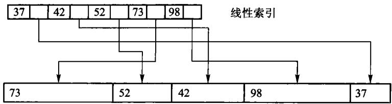

数据结构刻画信息及其关系，算法描述求解过程。二者互相依赖：结构选错了，算法再巧也补不回来。本章先用股市传言把问题说到能写程序，再补回逻辑结构、存储映射、抽象数据类型和渐进分析——这些原书没错，是后面十一章共用的词汇。
#1.1 问题求解
程序是指令的组合，算法是求解过程的逻辑抽象，数据结构是数据及其关系在计算机里的反映。Wirth 的「程序 = 数据结构 + 算法」说的就是这件事。求解路径通常是：把现实问题抽象成模型，选定逻辑结构与存储方式，再设计算法并写成可运行的程序。
#1.1.1 问题描述：股市的传言
本章把原书 1.1 的“股市传言”问题写成一个可直接调用的程序。它不是在找“边最多”的经纪人， 而是在找一个起点：从这个人出发能把消息传给所有人，并且最慢的那条最短传播路径尽可能短。
#1.1.2 问题分析和抽象
把 B1 到 B5 看成五个顶点。一条 Bi -> Bj 边表示消息能从 Bi 直接传给 Bj；边权是传播 时间。没有路径就记为 ∞，表示消息永远传不到那里。B3 是唯一可以到达全部经纪人的起点。
图1.1 经纪人间的消息传递（有向边，时间为权）：
| 起点 | 终点 | 时间 |
|---|---|---|
| B1 | B4 | 4 |
| B1 | B2 | 8 |
| B1 | B5 | 3 |
| B2 | B5 | 8 |
| B3 | B1 | 6 |
| B3 | B2 | 7 |
| B3 | B4 | 10 |
| B3 | B5 | 2 |
| B5 | B1 | 5 |
| B5 | B2 | 5 |
B3 指出四条边，是唯一能到达其余所有人的起点。原书把这张关系表画成一个有向带权图：

图 1.1 经纪人间的消息传递图。顶点 Bi 是第 i 个经纪人，有向边 ⟨Bi,Bj⟩ 表示 i 能把消息传给 j，边上的数是所需时间。Bi 到 Bj 与 Bj 到 Bi 的时间不一定相同——图中 B1→B5 是 3，B5→B1 是 5。
于是问题变成：在有向带权图里找一个顶点，从它出发能以最短时间把消息送到其余所有顶点。两点之间可以绕道——B5 到 B4 要经 B1 中转，顶点序列 B5B1B4 就是一条路径，路径长度是各边权之和；两点之间最短的那条路径叫最短路径。
本题要算任意两点之间的最短路径，所以图用相邻矩阵存：第 i 行第 j 列是边 ⟨Bi,Bj⟩ 的权，没有边记 ∞。图 1.1 对应的相邻矩阵就是原书的图 1.2。
| B1 | B2 | B3 | B4 | B5 | |
|---|---|---|---|---|---|
| B1 | 0 | 8 | ∞ | 4 | 3 |
| B2 | ∞ | 0 | ∞ | ∞ | 8 |
| B3 | 6 | 7 | 0 | 10 | 2 |
| B4 | ∞ | ∞ | ∞ | 0 | ∞ |
| B5 | 5 | 5 | ∞ | ∞ | 0 |
图 1.2 经纪人间消息传递的相邻矩阵，即算法的输入。底稿里这张表被 OCR 打坏——∞ 大量被认成 8，所以它不能照抄；这里的取值以表 1.1 和图 1.1 为准，并与图 1.3 的结果矩阵逐格对得上。
原书算法 1.1 的工作可以拆成三步：
- Floyd 算法算出任意两人间的最短传播时间。
- 对每一个候选起点，找出“从它出发到每个人的最短时间”中最慢的一项。
- 从这些最大值中选最小的一个；如果某行仍有不可达的
∞，该起点不能胜任。
原书中的 D 对应现代代码里的 shortest 矩阵，max[i] 对应每一行的 largest_distance，pos 对应 best_source() 的返回值。下标从 0 开始，因此 B3 的返回值是 2。
#为什么要取“最慢的一项”
假设从 B3 开始，Floyd 算出的最短传播时间为：到 B1 是 6，到 B2 是 7，到自身是 0，到 B4 是 10，到 B5 是 2。消息要“传遍所有人”，必须等最慢的 B4 收到消息，因此 B3 的完成时间是 这五个数里的最大值 10，而不是它们的和，也不是最小值。
把每个人都当一次起点，结果如下。∞ 表示至少有一人永远收不到消息，所以这一行没有可用的 完成时间。
| 起点 | 到 B1 | 到 B2 | 到 B3 | 到 B4 | 到 B5 | 最慢的最短时间 | 是否可选 |
|---|---|---|---|---|---|---|---|
| B1 | 0 | 8 | ∞ | 4 | 3 | ∞ | 否 |
| B2 | 13 | 0 | ∞ | 17 | 8 | ∞ | 否 |
| B3 | 6 | 7 | 0 | 10 | 2 | 10 | 是 |
| B4 | ∞ | ∞ | ∞ | 0 | ∞ | ∞ | 否 |
| B5 | 5 | 5 | ∞ | 9 | 0 | ∞ | 否 |
这张表就是原书的图 1.3——Floyd 算出的结果矩阵：

图 1.3 Floyd 算完之后的矩阵。每一行是从 Bi 出发到各点的最短时间；第 3 行最大的一项是 10，其余各行都含 ∞。图 1.3 在底稿里是一张图片，没被 OCR 碰过，因此它是核对图 1.2 取值的证据：第 1 行第 2 列印的是 8 而不是 ∞，说明 B1→B2 确实是一条权为 8 的边。
因此答案是 B3。这个目标常称为“最小化最大距离”：不是选离某一个人最近的起点，而是选让 最后一个收到消息的人也尽可能早收到消息的起点。
#1.1.3 数据结构和算法设计
下面是完整可运行的程序。RumorNetwork(5) 创建 B1 至 B5；add_route(from, to, cost) 添加一条 有向传播路径，三个参数均从 0 开始编号。best_source() 返回 std::optional<std::size_t>—— 可以先理解成一个「可能装着下标的盒子」：有解时盒子里是起点下标，无解时盒子是空的 （std::nullopt）。取值前必须先判断盒子空不空，所以「无解」这种情况不可能被漏掉。 为什么不用「返回 bool + 引用参数带出下标」的老写法，第 2.2.2 节有完整对照。
源码文件在这里：可运行示例、 数据结构实现、测试用例。 demo.cpp 负责输入/输出；modern.hpp 只负责数据和计算，这就是把“怎么展示”与“怎么算”分开。
#include "modern.hpp"
#include <iostream>
int main() {
// B1 ... B5 对应下标 0 ... 4。
dsa::adt::RumorNetwork network(5);
network.add_route(0, 3, 4); // B1 -> B4，耗时 4
network.add_route(0, 4, 3); // B1 -> B5，耗时 3
network.add_route(0, 1, 8); // B1 -> B2，耗时 8
network.add_route(1, 4, 8); // B2 -> B5，耗时 8
network.add_route(2, 0, 6); // B3 -> B1，耗时 6
network.add_route(2, 1, 7); // B3 -> B2，耗时 7
network.add_route(2, 3, 10); // B3 -> B4，耗时 10
network.add_route(2, 4, 2); // B3 -> B5，耗时 2
network.add_route(4, 0, 5); // B5 -> B1，耗时 5
network.add_route(4, 1, 5); // B5 -> B2，耗时 5
const auto source = network.best_source();
if (source) {
std::cout << "最佳传播起点是 B" << *source + 1 << '\n';
} else {
std::cout << "不存在能到达全部经纪人的起点\n";
}
}在仓库根目录运行：
c++ -std=c++17 -Wall -Wextra -Werror -Icode/ch01/adt code/ch01/adt/demo.cpp -o /tmp/rumor-demo
/tmp/rumor-demo第一行是“编译”，第二行是“运行刚刚编译出的程序”。逐项解释如下：
| 片段 | 含义 |
|---|---|
c++ |
C++ 编译器命令。在 macOS 上通常指 Clang；Linux 上也可能指 GCC。 |
-std=c++17 |
按 C++17 语言规则编译；本教程的 std::optional 需要 C++17。 |
-Wall -Wextra |
打开常见和额外的编译器警告，例如未使用变量或可疑转换。 |
-Werror |
把警告当作错误；用于学习时可及早发现问题。初学调试时可暂时去掉它。 |
-Icode/ch01/adt |
加一个头文件搜索目录，因此 #include "modern.hpp" 能找到 code/ch01/adt/modern.hpp。 |
code/ch01/adt/demo.cpp |
要编译的源文件。它包含 main()，所以可以成为可执行程序。 |
-o /tmp/rumor-demo |
指定输出文件名为 /tmp/rumor-demo。/tmp 是临时目录，重启后文件可能消失。 |
/tmp/rumor-demo |
运行该可执行文件，打印程序结果。 |
如果系统提示 c++: command not found，需要先安装 C++ 编译器；如果想把程序留在当前目录， 可以把 -o /tmp/rumor-demo 改成 -o rumor-demo，再运行 ./rumor-demo。
输出是：
最佳传播起点是 B3如果删除 B3 的某条出边，例如 network.add_route(2, 1, 7)，B3 将无法到达 B2；当不存在任何 能覆盖全部顶点的起点时，best_source() 返回空值，程序会输出“不存在能到达全部经纪人的起点”。
可以先只改边和权值，再运行同一条命令观察结果。例如把 B3 -> B4 的时间从 10 改为 1，答案 仍是 B3，只是它的最慢传播时间从 10 缩短为 7。
#实现导读
先只关注三个公开操作：构造函数建立距离矩阵，add_route 填入直接边，best_source 计算答案。 best_source 内部复制一份矩阵，因而多次调用不会改变原始网络。下面按代码出现顺序解释。
#预处理、头文件与命名空间
#pragma once 告诉编译器：同一个头文件即使被间接包含多次，也只处理一次，避免类定义重复。
| 头文件 | 本程序用它做什么 |
|---|---|
<cstddef> |
提供 std::size_t，表示非负的大小或下标。 |
<limits> |
提供 std::numeric_limits<int>::max()，取得 int 可表示的最大值。 |
<optional> |
提供 std::optional，表达“可能没有答案”。 |
<stdexcept> |
提供 std::invalid_argument，用于报告非法参数。 |
<vector> |
提供动态数组 std::vector，这里用它保存二维距离矩阵。 |
namespace dsa::adt { ... } 把名字放入 dsa::adt 命名空间。完整类名因此是 dsa::adt::RumorNetwork，可避免项目中另一个人也定义 RumorNetwork 时发生重名。 代码块中的 // >>> adt 与 // <<< adt 只是本书稿的同步标记，不参与 C++ 逻辑。
#类、常量和构造函数
class RumorNetwork 定义一种新类型。public: 以下是调用者可以使用的接口；private: 以下是 实现细节，调用者不能直接改写。
static constexpr int infinity = std::numeric_limits<int>::max() / 4;static 表示 infinity 属于类本身，而不是每个对象各存一份；constexpr 表示编译期常量。 取最大值的四分之一而非最大值，是为了计算 a + b 时仍留有余量，避免整数溢出。
explicit RumorNetwork(std::size_t people)
: distance_(people, std::vector<int>(people, infinity)) { ... }这是构造函数：RumorNetwork network(5) 会调用它。冒号后的部分叫成员初始化列表，先创建 distance_，再进入花括号。它构造一个 5 行、每行 5 列的整数矩阵，初始全为 infinity。随后 循环把对角线改为 0，因为一个人到自己不需要传播时间。矩阵的第 from 行、第 to 列总是表示 从 from 到 to 的当前已知最短时间。
#添加一条边
void add_route(std::size_t from, std::size_t to, int cost)这三个参数分别是起点编号、终点编号和直接传播时间。第一段 if 检查编号是否越界、时间是否为 负；不满足题目定义时抛出 std::invalid_argument，调用者可用 try/catch 处理。第二段 if 只在 新边更短时更新矩阵，所以即使重复添加同一方向的边，也保留较小的时间。
#Floyd 三重循环
auto shortest = distance_; 复制输入矩阵。auto 让编译器自动推断类型，这里实际是 std::vector<std::vector<int>>。
三层循环的含义不是“随便循环三次”，而是按中转站逐步扩大可用路径：
for each via: 允许路径经过 via
for each from: 固定起点 from
for each to: 固定终点 to
比较 原来的 from->to 与 from->via->to条件 shortest[from][via] != infinity && shortest[via][to] != infinity 先确认两段都可达。 若 from -> via -> to 的总时间更小，就更新 shortest[from][to]。例如 B2 到 B4 没有直接边， 但 B2→B5 是 8、B5→B1 是 5、B1→B4 是 4，所以 Floyd 最终得到 B2→B4 是 8 + 5 + 4 = 17。
#从最短路矩阵选答案
std::optional<std::size_t> result;
int smallest_eccentricity = infinity;默认构造的 result 是空值，表示“还没有找到合格起点”。smallest_eccentricity 保存目前见过的 最小完成时间。这里的 eccentricity（离心率）就是某起点到全部顶点的最短距离中的最大值。
外层循环每次处理一行，即一个候选起点；内层循环扫描该行。三目表达式 distance > largest_distance ? distance : largest_distance 等价于“若新值更大就采用新值，否则保留 旧值”，最终得到这行的最大值。若它比当前最佳值小，就同时更新最佳时间与 result。
任何一行含 infinity 时，该行最大值也是 infinity，不会优于有限答案；若所有行都是 infinity，result 保持为空，函数返回 std::nullopt。[[nodiscard]] 提醒编译器：调用者不应 无意丢弃这个可能为空的重要返回值。
#私有数据成员
std::vector<std::vector<int>> distance_;外层 vector 是行，内层 vector<int> 是一行中的列，合起来是二维矩阵。末尾下划线是本教程的 约定，表示私有成员；它与函数参数 distance 或局部变量 shortest 不会混淆。
时间复杂度为 O(V^3)，空间复杂度为 O(V^2)。这适合顶点数较少、需要比较所有起点的示例；大图 通常应根据图的稀疏度和查询需求选择其他最短路径算法。
#现代实现
#pragma once
#include <cstddef>
#include <limits>
#include <optional>
#include <stdexcept>
#include <vector>
namespace dsa::adt {
// >>> adt
class RumorNetwork {
public:
static constexpr int infinity = std::numeric_limits<int>::max() / 4;
explicit RumorNetwork(std::size_t people)
: distance_(people, std::vector<int>(people, infinity)) {
for (std::size_t person = 0; person < people; ++person) {
distance_[person][person] = 0;
}
}
void add_route(std::size_t from, std::size_t to, int cost) {
if (from >= distance_.size() || to >= distance_.size() || cost < 0) {
throw std::invalid_argument("route");
}
if (cost < distance_[from][to]) {
distance_[from][to] = cost;
}
}
[[nodiscard]] std::optional<std::size_t> best_source() const {
auto shortest = distance_;
for (std::size_t via = 0; via < shortest.size(); ++via) {
for (std::size_t from = 0; from < shortest.size(); ++from) {
for (std::size_t to = 0; to < shortest.size(); ++to) {
if (shortest[from][via] != infinity &&
shortest[via][to] != infinity &&
shortest[from][to] > shortest[from][via] + shortest[via][to]) {
shortest[from][to] = shortest[from][via] + shortest[via][to];
}
}
}
}
std::optional<std::size_t> result;
int smallest_eccentricity = infinity;
for (std::size_t from = 0; from < shortest.size(); ++from) {
int largest_distance = 0;
for (int distance : shortest[from]) {
largest_distance = distance > largest_distance ? distance : largest_distance;
}
if (largest_distance < smallest_eccentricity) {
smallest_eccentricity = largest_distance;
result = from;
}
}
return result;
}
private:
std::vector<std::vector<int>> distance_;
};
// <<< adt
} // namespace dsa::adt#1.2 数据结构
数据结构描述的是：按一定逻辑关系组织起来的数据，它们在计算机里怎么存放，以及定义在其上的运算。三件事要分开看——逻辑结构、存储结构、运算——后面各章都在这三层之间做选择。
#1.2.1 数据的逻辑结构
逻辑结构是从具体问题里抽出来的模型，只谈「有哪些结点、结点之间是什么关系」，不谈它们占几个字节。1.1 节经纪人之间的传播路径就是一个有向图：结点是人，关系是「消息能直接传给谁」。
用集合的语言写，逻辑结构是一个二元组 B=(K,R)。K 是结点的有穷集合；关系集 R 是定义在 K 上的一组二元关系。若 <k,k'>∈r，则称 k 是 k' 在关系 r 上的前驱，k' 是 k 的后继。没有前驱的是开始结点，没有后继的是终止结点。
教学计划是另一个常见例子。每门课是一个结点，全部必修课组成 K；「必须先修」是 K 上的一个关系。<程序设计, 数据结构> 表示必须先上程序设计，再上数据结构。没有先修约束的课可以并行开设。
结点本身的类型可以很简单，也可以很复杂。整数、布尔、字符是基本类型；数组、结构、对象是复合类型。数据结构课关心的是结点之间的关系，所以通常把结点当作黑盒。
本书讨论的结构，R 里通常只有一个关系 r。按 r 的形态可以分成三类：
- 线性结构。 每个结点在关系上最多一个前驱、一个后继。有唯一的开始结点（无前驱）和唯一的终止结点（无后继），其余内部结点恰好一前一后。数组、链表、栈、队列都是线性结构。
- 树形结构。 有且仅有一个没有前驱的根；其余每个结点恰好一个前驱，后继数目不限。从根到任意结点都存在唯一的一条由关系元组串起来的路径。文件系统的目录就是树。
- 图结构。 前驱和后继的数目都不加限制。交通网、1.1 节的传言网都是图。
树和图的分界是「每个结点是否至多一个直接前驱」；线和树的分界是「每个结点是否至多一个直接后继」。后面各章都建立在这三种关系上。
#1.2.2 数据的存储结构
存储结构回答的是：同一套逻辑关系，在计算机的存储器里怎么落下来。主存按字节编址，相邻单元的地址连续，并且可以按地址随机访问、访问时间基本相同。
要把 (K,r) 存进去，需要两层映射：每个结点 k 对应存储器里一块连续区域；每个关系元组 <ki,kj> 对应两块区域地址之间的某种关系——或者是地址相邻，或者是指针相指。同一种逻辑结构可以有多种映射。线性表既可以顺序存放，也可以链接存放，得到的就是顺序表和链表。
常用的四种基本方法如下。
顺序方法把一组结点放进一片地址相邻的单元，逻辑上的先后用地址的先后表示。按下标访问因此是 O(1)。程序语言里的数组就是顺序方法。它通常也是紧凑的：除了数据本身，几乎不存附加信息。存储密度定义为「真正的数据」所占空间与整块结构所占空间之比。非线性结构有时也能顺序存放，但要额外记下一些关系信息，例如完全二叉树按层编号后，孩子下标可以用 2i+1、2i+2 算出来。
链接方法在每个结点里附一个（或多个）指针域，专门存放后继的地址。结点因此分成数据域和指针域。需要一个结点同时挂多个后继时，就放多个指针。链接适合经常增删、长度事先不知道的结构。代价是：不知道指针时，只能从链头一个一个比下去；按位置访问不再是 O(1)。
索引方法是顺序存储的推广。另造一张从整数下标到存储地址的表，每个表项是指向一条记录的指针。索引表的空间是附加在数据之外的。检索时先在较小的索引里定位，再按地址读记录；数据量大、一次磁盘读写很贵时，索引的意义就是少读盘。
原书特意指出，索引函数一般不是数组那样的简单线性函数——数据结点长度不等时它就不可能是线性的。图 1.4 画的正是这种情况：

图 1.4 索引示例
把它抄成文字，两行数字对照着看：
存储区的数据 —— 物理无序，而且每块长度不等
┌────────────────┬──────────┬────────────┬──────────────┬────────┐
│ [1] 73 │ [2] 52 │ [3] 42 │ [4] 98 │ [5] 37 │
└────────────────┴──────────┴────────────┴──────────────┴────────┘
线性索引 —— 附加在数据之外的一张小表
┌──────┬──────┬──────┬──────┬──────┐
│ 37 │ 42 │ 52 │ 73 │ 98 │ 关键码：升序 —— 逻辑有序
├──────┼──────┼──────┼──────┼──────┤
│ [5] │ [3] │ [2] │ [1] │ [4] │ 指向第几块：乱序 —— 物理无序
└──────┴──────┴──────┴──────┴──────┘这两行的错位就是索引的全部意义。 上面一行升序，所以可以在索引里二分；下面一行完全乱序，说明数据一块都没有搬动过。要找关键码 52，先在索引里二分定位到第 3 列，读出 [2]，再直接去存储区取第 2 块——只读了一块，没有扫过其余四块。
顺带看一眼每块的宽度：五块长度各不相同。正因为长度不等，"第 k 块在哪"就没法用 起始地址 + k × 块长 算出来，只能查表——这才是原书说"索引函数并非数组那样的简单线性函数"的意思。
散列方法是索引的延伸：不先造一张排好序的表，而是用散列函数从关键码直接算出地址，再把结点放进对应槽位。散列函数应当算得快，并且尽量把地址均匀铺开。冲突怎么处理、装载因子多高会退化，是第 10 章的内容。
具体应用里这四种方法经常组合。树的「子结点表」就是顺序加链接；选哪一种，还要看定义在结构上的运算——要不要随机访问、会不会频繁插入、数据在内存还是外存。
#1.2.3 抽象数据类型
抽象意味着同一个概念可以有多种实现。一旦抽象问题被解决，许多同类问题就不必从头再来。用户自定义的类型，通常就是对「多种可能的存储和实现」做一次抽象。
抽象数据类型（abstract data type，ADT）这个词是逐步形成的。二十世纪六七十年代，人们把用户自己定义的类型叫做抽象数据类型。更早的算法语言往往不提供这种机制。六十年代后期，为了把算法细节和数据的内部结构藏起来，Simula 67 引入了类，随后出现了模块：模块式给出外部看得见的运算接口，模块体存放对外不可见的私有数据和实现。接口与实现分离之后，用户才能真正自定义类型，达到数据抽象和信息隐蔽。在这个意义下，模块所定义的数据类型就叫做抽象数据类型。
作为描述数据结构的理论工具，ADT 可以看成「定义了一组操作的抽象模型」。它把数据和操作封在一起，使用方只能通过这些操作访问数据，不能直接去翻内部表示。这样，讨论一种结构时可以先不管它是数组还是链表，只问它提供哪些运算、这些运算有什么约定。整数连同加、减、乘、除，就是一个最简单的 ADT。
一般写成三元组 (D,R,P)：
ADT 名字 {
数据对象 D：结点是什么
数据关系 R：结点之间有什么关系
基本操作 P：对外提供哪些运算
}D 和 R 给出数据模型，是对数据的抽象；P 给出这个模型能做什么，是对操作的抽象。
在面向对象语言里，一组操作常常先写成接口，不透露实现。C++ 用类（以及类模板）的声明表示 ADT，用类的定义去实现它。因此，一个写好的 C++ 类同时承担两件事：它是某种存储结构，也是这组运算在该存储上的实现。
这两层不要混：概念层上的 ADT 描述「问题需要什么运算」；实现层上的类描述「这些运算在内存里怎么做」。类本身还是一种普通类型，可以拿来定义变量，也就是对象。所以 ADT 也可以说成：数据的逻辑结构，加上定义在这个逻辑结构上的一组抽象运算。
原书【代码1.2】用下面这个空模板来提醒读者「先写接口」：
template <class Type>
class ClassName {
private:
Type data; // 取值类型和存储
public:
void method(); // 对外运算
};原书习惯先写一个只有函数声明、没有任何实现的抽象基类（例如 List<T>），再让 arrList 继承它。本书各章不这么做，原因有两条：
- 它给不了多态。 基类之所以有用，是因为可以「拿基类指针指向派生对象」， 写一份代码同时适用于顺序表和链表。但本书各章的容器是模板，元素类型在编译期就定了， 彼此之间根本不需要互相替换；这个基类从头到尾没有一处用到。
- 它还会引入一个陷阱。 只要基类的析构函数不是
virtual的，一旦有人写出List<int>* p = new ArrayList<int>; delete p;，标准规定这是未定义行为—— 编译器不保证会发生什么：常见后果是只析构了基类那一层，派生类里new出来的缓冲区 没人释放，内存就漏了；也可能直接崩。「未定义行为」这个词在本书里会反复出现， 它的意思始终是「标准不再对程序的行为作任何承诺」，而不是「结果不确定但还能用」。
所以运算直接写在实现类上。对元素类型的要求，正文里用一句话说清即可：例如顺序栈、 顺序表底层是 new T[n]，会把整块槽位都默认构造出来，所以 T 必须能默认构造。
#1.3 算法
算法研究可以追溯得很远。中文「算法」出自《周髀算经》；英文 algorithm 来自九世纪波斯数学家花拉子米（al-Khwarizmi）。Ada Lovelace 在 1842 年为巴贝奇分析机写过求解伯努利方程的程序，因此常被看作第一位程序员；那台机器没有建成，程序也没有真正跑过。二十世纪图灵提出图灵机，给「什么叫做可计算」一个精确模型，多数算法才可以稳定地写成交给计算机执行的程序。Knuth 在七十年代说，计算机科学就是研究算法的学问。
按应用范围，算法分成数值的和非数值的；按工作方式，分成串行的和并行的。本书后面各章几乎都是非数值、串行的算法。
#1.3.1 算法的概念
算法是对特定问题求解过程的描述：为解决该问题而采取的、具体而有限的操作步骤。程序是算法的一种实现；计算机按程序一步一步做，就把问题解出来。
描述一个算法，通常要说清输入是什么类型、输出应满足什么性质。辗转相除法的输入是两个正整数 n、m，输出是它们的最大公因子。高斯消元的输入是系数矩阵和右端常数，输出是使方程成立的一组变元取值。
算法一般要满足四条性质。
- 通用。 凡是符合声明类型的输入，都能按同一套步骤求解，并且结果正确。不是只对书上那一组样例成立。
- 有效。 每一步都是人或机器能确切执行的动作，指令集是有限、明确的。辗转相除只用「整除取余、取商、判断余数是否为零」。每一步的结果也要有确定的类型，不能算完不知道得到的是什么。
- 确定。 做完这一步，下一步是什么必须说死：顺序往下、按条件分支、或者结束。不能停在「被锁住」的状态，也不能只写一句含糊的话。
- 有穷。 必须在有限步内停机，不能含死循环。注意：指令条数有限，并不自动保证执行步数有限——循环条件写错，有限条指令也可以转个没完。设计时要单独检查结束条件。
程序是算法落在某种语言里的样子。同一算法可以有许多程序；一个程序如果对某类输入会永远循环，它就不是该问题的算法。
#1.3.2 算法设计
算法设计要回答：面对这一类问题，步骤从哪来。常用方法有穷举、回溯、分治、递归、贪心和动态规划。
穷举（枚举）把问题空间里的对象按某种规则一一列出来，逐个检查是否满足条件。对象必须有限，并且有明确的列举顺序。全局穷举往往太慢，但在局部很有用。switch 按离散取值分支，就是一种小范围穷举。
回溯（试探）按某种顺序枚举候选解。发现当前候选不可能成功，就放弃它、退回上一步换下一个，这个动作叫回溯；当前候选还不够大、但局部约束都满足，就把它扩大再试，这个动作叫向前试探。第 5、6、7 章的深度优先周游，以及第 3 章的背包，都是回溯。
分治把一个大问题剖成若干较小的、同类的子问题，分别求解，再把子问题的解合并成原问题的解。这是自顶向下的。如果子问题仍是原问题的缩小版，反复剖下去就会自然地写成递归。分治和递归经常成对出现。第 8 章的快排、归并，第 10 章的二分检索，都是分治。
贪心从初始状态出发，每一步按某个局部最优标准做一个不可撤回的选择，希望这些局部最优能拼成全局最优。度量标准选得对不对，是贪心能不能用的核心。动态规划也处理最优性问题，但子问题往往互相重叠：如果直接按分治递归，同一子问题会被算很多次。办法是把已经算过的答案存进一张表，以后直接查。第 7 章的 Prim、Kruskal、Dijkstra 是贪心；Floyd 是比较典型的动态规划。第 12 章的最优二叉搜索树也是动态规划。
1.1 节的传言问题要任意两点最短路，并且顶点数很小，所以选 Floyd，而不是对每个起点跑一遍 Dijkstra。
这几种方法可以组合、变形，也可以只拿来处理困难问题的特殊情形。后面各章会反复回到它们。
#1.4 算法分析
同一问题往往有多种算法，各有适用场合。算法分析用数学工具讨论每种算法的代价，目的是：在已有算法里选出比较合适的一种，或者看清该往哪个方向改进。
Hartmanis 和 Stearns 把这种代价叫做计算复杂性。复杂性高，意思是跑这个算法要消耗的计算机资源多。最要紧的两种资源是时间（处理器）和空间（存储器）。本书后文说的「时间代价」「空间代价」，指的就是这两项。
不能用墙上的秒数来比较算法。同一段程序在巨型机和 PC 上可以差几个数量级；换一种语言、换一个编译器，数字也会变。C 写的程序曾经比同一算法的 LISP 实现快近二十倍——那是实现环境的差别，不是算法的差别。所以分析时看的是：输入规模为 n 时，算法做了多少次与具体机器无关的基本操作。规模一般指输入量的个数，排序里就是待排元素的个数；一次基本操作耗时应当与操作数的具体数值无关，例如两个机器字整数相加。
若时间与规模成线性，t=cn，规模乘 5，时间也乘 5。若 t= log2n，规模加倍，时间只加 1。后面各章的「O(n)」「O(n log n)」都按这个口径读。
#1.4.1 渐进分析方法
精确计数往往是一个很复杂的函数。n 很大时，不能显著改变量级的项都可以丢掉，剩下的近似在规模足够大时会贴近原值。这种方法叫渐进分析。例如
n=1 时常数项 1000 最大；n=10 时 100n 与 1000 相当；n=100 时前两项相当；n 再大，二次项就压倒其余所有项。所以这个函数在 n 很大时就是 Θ(n2)。
渐进分析是一种故意简化的模型，用来把注意力放在最重要的部分。并非任何时候都能忽略常数：只排 10 个数的算法，和排上万个数的算法，适用的实现可以完全不同。
大 O。 设 f、g 是从自然数到非负实数的函数。若存在正数 c 和 N，使得所有 n≥N 都有 f(n)≤c g(n)，则称 f(n) 是 O(g(n)) 的。g 是 f 增长的一个上限：这个算法最多会差到什么程度。上限可以有很多，O(n) 里的函数一定也在 O(n2) 里；习惯上取那个最小的、仍然成立的上限。
几条常用性质：f 是 O(g)、g 是 O(h)，则 f 是 O(h)；两个 O(h) 相加仍是 O(h)；ank 是 O(nk)；常数倍不改变阶；不同底的对数同阶，本书把 log2n 简写为 log n。
常见的上限有：
| g(n) | 名称 | 直观 |
|---|---|---|
| 1 | 常数 | 与 n 无关 |
| log n | 对数 | 比线性慢，二分检索 |
| n | 线性 | 扫一遍 |
| n log n | 线性对数 | 低于平方，快排 / 归并 / 许多树算法 |
| n2 | 平方 | 1+2+⋯+n |
| an | 指数 | 比任何多项式都快，递归穷举时要小心 |
令时间单位为 1 μs，n=1000 时：T(n)=n 是 1 ms；T(n)=n2 是 1 s；T(n)=n3 约 16 分钟；T(n)=2n 大约 10286 年，而地球年龄不超过 1010 年。指数爆炸型算法能不用就不用。
图 1.5 把常用函数的增长趋势画在一起——n 稍大，曲线之间就拉开天文数字的差距：

图 1.5 常用函数的增长趋势。
同一组 n 用数字排出来是这样：
| 阶 | n=16 | n=256 | 直觉 |
|---|---|---|---|
| 1 | 1 | 1 | 常数 |
| log n | 4 | 8 | 二分 |
| n | 16 | 256 | 扫一遍 |
| n log n | 64 | 2048 | 快排 / 归并 |
| n2 | 256 | 65536 | 双重循环 |
| 2n | 65536 | — | 穷举子集 |
Ω。 把大 O 定义里的不等式反过来：存在 c、N，使 n≥N 时 f(n)≥c g(n)，则 f 是 Ω(g) 的。这是增长的下限，习惯上取那个最大的、仍然成立的下限。
Θ。 若 f 既是 O(g) 又是 Ω(g)，则称 f 是 Θ(g)：存在正常数 c1、c2 和正整数 N，使 n>N 时
例如 f(n)=100n2+5n+500 是 Θ(n2)，可取 c1=100、c2=105、N=10。
数一数基本操作。 对数组求和：
for (i = sum = 0; i < n; i++)
sum += a[i];循环前两次赋值，循环 n 次、每次两次赋值，一共 2+2n 次，即 O(n)。
两层循环求所有前缀和：外层 n 次，内层第 i 趟做约 2i 次赋值，总和是 1+3n+n(n−1)=O(n2)。循环嵌套通常会提高阶，但不是必然：若内层每次只处理固定的 4 个元素，总赋值次数仍是 O(n)。
排序算法的时间主要花在比较和移动上，具体见第 8 章。
#1.4.2 最佳、最差和平均情况
即使规模相同，输入不同，有些算法的操作次数也会差很多。因为实际走哪条分支，往往取决于数据本身。所以分析时要说清是哪一种输入。
顺序检索：目标在第一个位置，比较 1 次（最好）；目标不在表里，比较 n 次（最坏）；等概率时平均 (n+1)/2。快速排序平均 O(n log n)，已经有序时退化成 O(n2)。只报一个数字、不说针对哪种输入，这个数字没有意义。
#1.4.3 时间和空间的折衷
预排序、建索引、开散列表，都是先花时间或空间，再换检索时的时间。没有免费的加速。空间紧、时间松，和空间松、时间紧，选的结构会不一样。
#1.4.4 求解问题时数据结构的选择和评价
先看运算集合：要不要按下标访问，会不会在中间频繁插入删除，要不要按关键码直接找到记录。再看规模和存储层次：数据在内存还是外存，一次磁盘 I/O 往往比一次比较贵几个数量级。
1.1 节要任意两点最短路，并且只有五个经纪人，邻接矩阵加 Floyd 是合适的：实现简单，三重循环在 n=5 时可以忽略。顶点很多、边很少、只问单源最短路时，就应该换成邻接表加 Dijkstra。后面每一章都会再做一次这样的取舍。
#本章小结
本章从求解问题入手，引入数据结构、算法和衡量效率的方法。用计算机解题，是问题抽象、数据抽象和算法抽象：先把需求说清楚，再建成模型、选定结构和算法，最后用某种语言实现。
数据结构管三件事：逻辑结构（结点之间是什么关系）、存储结构（这套关系在存储器里怎么落）、运算。逻辑结构按关系形态分成线性、树、图三类。同一种逻辑结构可以顺序、链接、索引或散列存放。ADT 把数据和运算封在一起，使用方只看见接口。
算法是有限、确定、有效、有穷的指令序列。设计常用穷举、回溯、分治、递归、贪心和动态规划。分析不看墙上的秒数，而看基本操作次数随规模 n 怎么长，用大 O、Ω、Θ 说话，并分清最好、最坏和平均。时间和空间往往可以互换。
#习题
#补充证明练习（参考课程第 1 章）
- 精确计算下列双重循环中赋值语句
a[i][j] = 1的执行次数，再给出数量级：for (i=1; i<n; ++i) for (j=n; j>=i; --j) a[i][j]=1; - 对非负渐进函数证明
max(f(n), g(n)) = Theta(f(n)+g(n))。 - 求解并用数学归纳法证明
T(n)=2T(floor(n/2))+n的渐进阶。 - 设计一个算法，从大到小依次输出顺序读入的三个整数 X、Y、Z。
- 举例说明什么是数据结构。
- 数据有哪些存储方式？各有什么特点。
- 分析下面程序段中循环体执行多少次。
int i = 0, s = 0, n = 100;
do {
i = i + 1;
s = s + 10 * i;
} while ((i < n) && (s < n));- 指出算法 A 的功能和时间复杂度。h、g 是同一个单循环链表上的两个结点指针。
void B(Node* s, Node* q) {
Node* p = s;
while (p->next != q) p = p->next;
p->next = s;
}
void A(Node* h, Node* g) {
B(h, g);
B(g, h);
}- 设 n 是偶数，计算下列程序段结束后 m 的值，并给出时间复杂度。
m = 0;
for (i = 1; i <= n; i++)
for (j = 2 * i; j <= n; j++)
m = m + 1;- 把下列运行时间写成大 O：T1(n)=1000，T2(n)=n2+1000n，T3(n)=3n3+100n2+n+1。
- 给出下面两个算法的时间复杂度：(1) 一层循环 i=1..n 做 x=x+1；(2) 两层循环 i,j=1..n 做 x=x+1。
- 给出求两个整数最大公因数的算法，并分析时间和空间复杂度。
- 计算机每秒 1010 次操作，要求一小时内算完。下列复杂度各能处理多大的 n：n2，n3，100n2，n log10n，2n，22n。
- 已知 f(n) 是 O(g(n))。判断并证明或举反例：(1) log2f(n) 是 O(log2g(n))；(2) 2f(n) 是 O(2g(n))；(3) f(n)2 是 O(g(n)2)。
- 计算下列递推的复杂度：(1) T(n)=T(⌈n/2⌉)+1；(2) T(n)=T(⌊n/2⌋)+T(⌈n/2⌉)+1；(3) T(n)=2T(⌊n/2⌋)+n。
#上机题
- m、n 是自然数。m 可以写成若干个不超过 n 的自然数之和，编写 f(m,n) 计算有多少种写法。例如 f(5,3)=5：3+2，3+1+1，2+2+1，2+1+1+1，1+1+1+1+1。
- 用 C++ 类定义复数 ADT：内部用浮点数存实部和虚部；三个构造函数（默认、只给实部、同时给实部和虚部）；获取/修改实虚部，以及加减乘除；重载输出流。